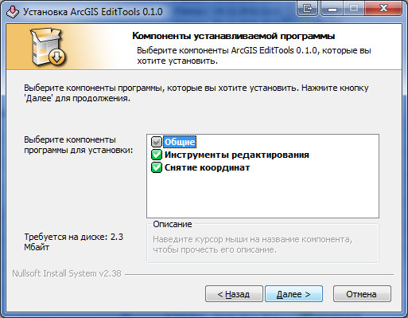
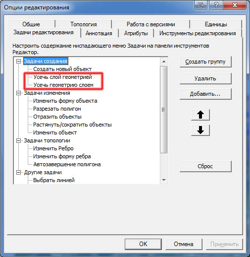
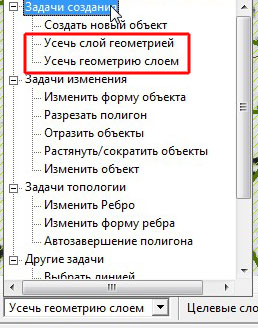
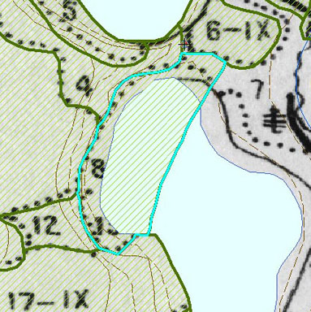
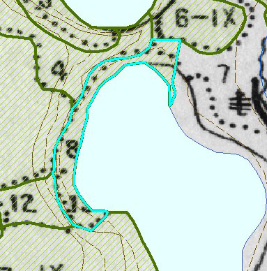

Обрезка полигонов и получение координат с помощью AGETools в ArcGIS
Описание набора инструментов
Набор инструментов AGETools (ArcGIS Edit Tools) был разработан Bishop для taimyr в связи с необходимостью решения ряда задач, ранее реализованных как расширения для ArcView 3x. Набор инструментов состоит из 2 групп - инструменты работы с полигональными геометриями и инструменты для снятия координат точек.
Инструментарий решено сделать общедоступным и распространять на основе лицензии GPL v.3, поэтому предоставляется как готовое расширение, так и исходные коды. Инструментарий работает в ArcGIS 9.x - 10.x. Тестировался на ОС Windows XP (х32 и х64), Windows Server 2003 (х32 и х64), Windows 7 (х32 и х64).
Оглавление
- Установка набора инструментов.
- Инструментарий для создания сплошных полигональных геометрий.
- Инструментарий для снятия координат.
1. Установка набора инструментов
Скачать расширение AGEdit Tools (628 Кб). Для установки заменить расширение файла на .exe и запустить. Будет предложено установить либо обе части расширения, либо любую по выбору.

Деинсталлировать установленное расширение можно, запустив "Program Files (Program Files (x86) на 64-разрядных ОС) \AGEditTools\Uninstall.exe"
Скачать исходный код расширения 860 кб (C++).
Оба инструмента уже несколько месяцев активно используются автором статьи в рабочих проектах, и существенных проблем не обнаружено, мало того, инструмент создания полигональных геометрий в отличие от аналога для ArcView 3.x не даёт массовых топологических ошибок в созданом покрытии.
2. Инструментарий для создания сплошных полигональных геометрий
Назначение
Для создания сплошных полигональных покрытий, чаще всего - дешифровочных схем и оцифровки тематических карт/планов. В этих случаях чаще идут следующими путями:
а) созданием единого полигона на всю область работы и "резкой" его на куски. На мой взгляд, медленно и не всегда удобно.
б) использованием инструментов, обеспечивающих автоматическую пристыковку вновь созданного полигона (ArcView 3, инструмент Stream Digitize). Недостатки - на сложных границах вешает систему вплоть до крушения, "дырки" внутри создаваемого полигона, если там уже есть объекты, всё равно не прорезает.
в) созданием линейного слоя границ и конвертацией в полигональный. Недостаток - сразу не видно созданных контуров в виде именно полигонов, поэтому часто требуется дополнительная "резка". Мне всегда было удобнее рисовать "всплошную", то есть новый полигон рисуется поверх уже имеющихся и по ним обрезается.
Специально для этого, Максимом Дубининым в свое время было создано расширение для ArcView (Заполнение пустого пространства ограниченного полигонами). Этот метод имел недостатки - как правило в созданном таким образом слое присутствовало множество топологических ошибок. Но их исправление - дело в целом достаточно простое, а выигрыш в скорости работы полностью компенсировал этот требующий дополнительных операций недостаток. В настоящее время на современных системах, однако, стало достаточно комфортно работать в ArcGIS/ArcMap.
Работа с расширением
После инсталляции расширения в списке задач Task появятся 2 новых пункта - "Усечь геометрию слоем" и "Усечь слой геометрией", в меню Other Tasks (Другие задачи), в Editor-Options-Edit-Tasks - это выглядит так :

По умолчанию новые пункты меню добавляются в Задачи создания (Edit Task). Если они не появились - выполнить Editor-Options-Edit-Tasks - Add - пункты будут там, добавить их в задачи и стрелками переместить в удобное место.

Инструменты работают так же, как и Create NewFeature (Создать новый объект)- создают полигон, можно переключатся в потоковой режим и рисовать freehand. "Усечь геометрию слоем" - автоматом обрезает вновь созданный полигон по всем нижележащим. При нажатой клавише Ctrl - обрезка производится по всем полигональным слоям, доступным для выборки, без - только по редактируемому слою.
Примеры работы
Усечение только по редактируемому слою:

Усечение по всем слоям, доступным для выборки:

Инструмент "Усечь слой геометрией" - наоборот, вырезает вновь создаваемый полигон из всех нижележащих, а при нажатом Ctrl - и из других полигональных слоев, доступных для выборки.
Также доступен параметр, выделять ли последний созданный полигон, он включается-выключается через новую вкладку в Editing Options флажком "Выделить геометрию после операции".
3. Инструментарий для снятия координат
Назначение
Предназначен для быстрого, без рассчетов и (или) ручных перебиваний координат нужных точек на карте в любые приложения, как в виде текста, так и в виде 2 полей таблицы, в различных форматах. Например - быстрый перенос координат нужных точек в базу данных (для последующего построения точечных слоев типа Event) или переноса координат в текстовый документ.
Работа с расширением:
После установки расширения в контекстном меню настройки появится новая панель инструментов:

Также ее можно включить в Tools-Customize-Toolbars" (Настройка-Панели инструментов) - поставить флажок на "Снятие координат".

Появившаяся панель инструментов имеет следующий вид:

Назначение кнопок (слева направо):
1) Собственно инструмент ("перекрестье прицела") снятия координат;
2) Список выбора формата вывода;
3) Добавление пользовательских форматов. Открывает окно :

Форматы с разделителем [tab] предназначены для вставки в таблицы в 2 смежные выделенные ячейки по горизонтали, с разделителем [ret] - по вертикали, форматы с [W] содержат также обозначения - с.ш., в.д. Маска ввода ясна из приведенных примеров. В случае некорректных масок или пустого значения - будет выдано сообщение об ошибке;
4) Очистка списка снятых координат (см. инструмент 6);
5) Поменять местами X и Y координаты (также работает для всего списка снятых координат);
6) Отображение окна со снятыми координатами;

Инструмент не только снимает координаты одной точки, но может и их накпливать, а также добавлять в имеющиеся в проекте таблицы (списки выбора таблиц и полей в ней внизу окна). Координаты по умолчанию добавляются в последнюю запись таблицы, если есть выделенная запись - в выделенную, если выделено несколько записей - в первую из выделенных.
В окне дублированы кнопки очистки хранящегося в памяти списка координат и и замены порядка X-Y координат.
В текущей версии расширения координаты добавляются только в таблицы формата .dbf и таблицы "родных" геобаз данных ArcGIS.
При изменении формата списком 2 все координаты в этом окне также поменяют формат, записанные в таблицу - останутся в ней, как и вводились.
Ссылки по теме
Дата создания: 07.02.2011
Автор(ы): Игорь Поспелов